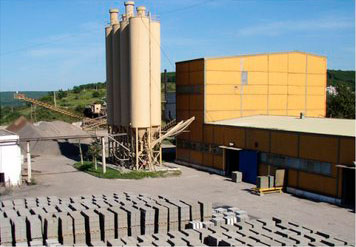
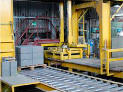

Главная >> О заводе
О заводе
В наше время одним из наиболее востребованных материалов является железобетон. Он представляет собой сочетание стальной арматуры и бетона и, соответственно, имеет те же плюсы, что и его составляющие. Бетон высокой прочности укрепляют при помощи каркасов, арматурных стержней и сеток и уплотняют с применением вибрации. В результате получается железобетон, который не боится высоких температурных нагрузок.
Проведение качественного строительства становится возможным в том случае, когда используются современные материалы. Изделия ЖБИ и железобетонные конструкции в данном случае занимают ведущие позиции. От того, насколько качественные фундаментные блоки, железобетонные плиты перекрытия и сваи применяются в конструкциях промышленных объектов или жилых строений, напрямую зависит долговечность, надежность и безопасность возводимых зданий.
Если вы решили приобрести изделия ЖБИ, то в случае необходимости наши менеджеры ответят на любые вопросы о технических характеристиках ассортимента представленной продукции. Железобетонные изделия от АО КСК "Ржевский" пользуются популярностью по всей России благодаря приемлемым ценам и высокому качеству производимых изделий.
Производство и продажа теплоблоков(h2)
Железобетонные изделия представляют собой широкий спектр конструкций, изготовленных из высококачественного конструкционного армированного бетона. При этом бетон надежно защищает металлическую арматуру от проявления коррозии, а арматура работает на растяжение. Особенности производства железобетонных изделий
Основными компонентами бетонной смеси являются вода и цемент. В сочетании, они образуют цементный камень, который создает монолитную конструкцию. Кроме того, при изготовлении специального конструкционного бетона используется мелкий щебень, который позволяет получить равномерное и качественное заполнение материалом формы и увеличивает прочность бетона.
В качестве армирующего элемента используются стальные прутья или проволока. Арматура, участвующая в производстве железобетонных изделий, разделяется на монтажную и рабочую. При этом монтажная арматура формирует скелет изделия и закрепляет петли для монтажа, а также фиксирует закладные элементы. Рабочая арматура используется в конструкции только тех изделий, которые работают на изгиб (например, балки и плиты перекрытий).
ЖБИ представлены во множестве разновидностей и каждая из них отличается собственной уникальной технологией производства.
Одним из самых распространенных строительных материалов является цемент. Этот сыпучий материал мелкой фракции, при взаимодействии с водой или водными растворами, превращается в вязкую кашеобразную массу, которая при застывании преобразуется в камнеобразное твердое вещество.
Преимущества нашей компании (h3)
Основа основ любого строительства — это бетон, строительный материал, который изготовляется путем смешивания песка, цемента, воды и некоторых добавок. Прочность бетона зависит от соотношения воды и цемента, поэтому этот параметр является определяющим для создания бетона определенной марки. В/Ц (водоцементное соотношение) определяется числовым выражением, чем оно выше, тем прочнее бетон.
Наши преимущества:
- известняк;
- глина;
- уголь;
- гипс и другие вещества;
- портландцемент;
Основа пола во время строительства и ремонта, должна соответствовать ряду критериев: прочность, идеальная ровность и высокое качество исполнения. Для обеспечения этих свойств, сегодня профессионалы все чаще применяют сухие смеси для полов.
По традиционной технологии обустройства полов, используется ЦПС со специальной армирующей сеткой, которая придает стяжке максимальную прочность и равномерно распределяет нагрузку в бетоне. При всей популярности данного метода, он имеет существенные недостатки: существенная усадка за счет уменьшения раствора в объеме при затвердевании, а также риск растрескивания.
Вторая, более современная технология — это использование сухих смесей для обустройства полов. Они отличаются однородным составом подходящих компонентов, что обеспечивает высокие характеристики готовой конструкции и прочность, даже без использования армирующей сетки. Кроме того, сухие смеси позволяют полностью нивелировать недостатки традиционной технологии.
Условия сотрудничества с нами:
- сорт включает в себя материал с трещинами и покоробленностями длиной до 20 см;
- сорт предполагает наличие трещин длиной до 20 см и не более чем 2% просачиваемости клея
- сорт составляет фанера с не более чем 10 червоточинами на кв. метр и не более чем 9 дефектами на листе;
- сорт — низкокачественная фанера с сучками, дефектами кромок и червоточинами не более 40 см диаметром.
- подготовительный этап;
Продукция завода - неоднократный победитель конкурсов (h4)
При выборе материала для стен, следует отдать предпочтение гипсокартону толщиной 12,5 мм. Это стандартный лист, наиболее универсально применимый в строительстве. Также вы увидите в продаже листы 9,5 и 6,5 мм. Гипсокартон толщиной 9,5 мм чаще используется для возведения подвесных потолков, однако, некоторые мастера отдают ему предпочтение при создании стен и перегородок. В зависимости от наличия дополнительных характеристик, цена за лист гипсокартона 9,5 мм может быть несколько ниже.
Хвойную фанеру производят с использованием двух видов клея, в зависимости от этого, ее можно разделить на два типа, которые маркируются ФСФ и ФК. В первом случае, для склеивания листов шпона используется фенолформальдегидный клей, менее токсичный, что позволяет использовать этот вид фанеры для внутренней отделки и мебельной промышленности. Второй тип фанеры производится с применением карбамидоформальдегидного клея, более токсичного за счет содержания свободного формальдегида. Этот тип фанеры пригоден для использования в качестве внешней отделки, а также для возведения временных конструкций.
Основным производителем березовой фанеры является Россия, поскольку пригодные для ее изготовления сорта березы произрастают преимущественно в наших широтах. Для изготовления фанеры пригодны два вида березы — пушистая и повислая. Эти сорта также произрастают на территории Скандинавских стран и в Прибалтике, однако большую часть березовой фанеры на мировой рынок поставляет Россия.
Высокая производительность завода (h5)
Грунтовка под обои изготавливается из кварцевых наполнителей, стирол-акриловых полимеров и целого комплекса технологических добавок, которые придают материалу те или иные эксплуатационные свойства. Внутренняя или наружная грунтовка отличается пожаробезопасностью, отсутствием в составе вредных и токсичных растворителей. Кроме того, состав не имеет запаха и очень удобен в использовании.
Кельмы Yutong, представленные у нас в продаже, изготовлены из нержавеющей стали, поэтому не подвержены коррозии. Этот инструмент для кладки газобетона не гнется под тяжестью раствора, что не вызывает неудобства при работе, а также исключает разливание раствора на стены и площадку возле нее.
В категории металлопродукции, наша компания осуществляет продажу арматуры рифленой, которая производится в соответствии с ГОСТ. Рифленая арматура пользуется заслуженной популярностью, поскольку обладает более высокими, чем гладкая, показателями качества сцепления с основой. Область ее применения также намного шире, она используется при изготовлении железобетонных конструкций, при строительстве фундаментов, возведении несущих конструкций, широко применяется при сооружении высотных зданий в качестве армирующего элемента.
Обратная связь
В категории металлопродукции, наша компания осуществляет продажу арматуры рифленой, которая производится в соответствии с ГОСТ.
В категории металлопродукции, наша компания осуществляет продажу арматуры рифленой, которая производится в соответствии с ГОСТ.
В категории металлопродукции, наша компания осуществляет продажу арматуры рифленой, которая производится в соответствии с ГОСТ.